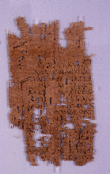

Theocritus, Idyl,
xiii.
AM 4424 (= P. Oxy. IV 694), II c AD

Also
available: a larger image (128k)
Background and Physical
Properties
Publ./Side: Recto
Material: Papyrus
Items: 1
Size: 14.2 x 8.4 cm.
Lines: 16
Negative: Transparency
Conservation Status:
Status: Published
--------------------------------------------
Contents
Date: II c. AD
Provenance: Oxyrhynchus, Oxyrhynchite nome, province of Egypt
Acquisition: AM 4424
Language: Greek
Genre: Literary
Author: Theocritus
Type of Text/Title of Work: Idyl
Content: xiii
--------------------------------------------
Information on Publications
First edition:
Series and volume: The Oxyrhynchus Papyri IV
Editor: B. P. Grenfell and A. S. Hunt
Year: 1904
Pg/Nr: 694
Photo: No